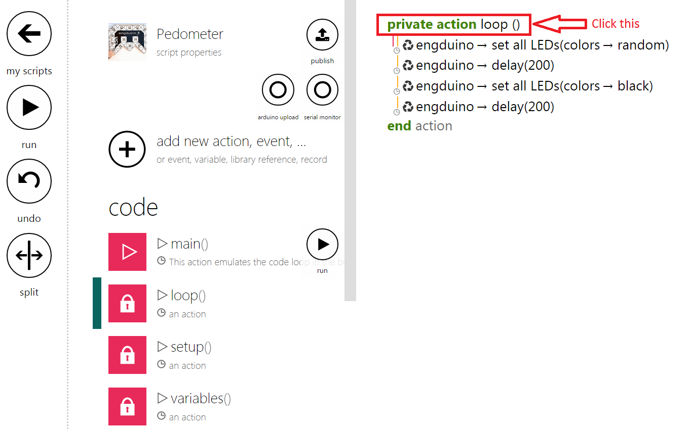
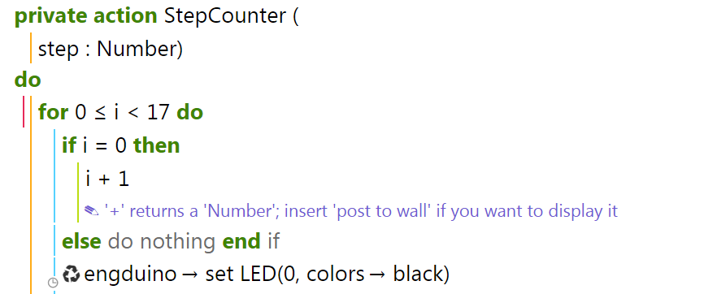

Engduino Race
In this tutorial, we will teach you to write the code to make an Engduino race meter! Let's call our little Engduino race meter a Pedometer.
Our Pedometer will count the number of steps the user take and light up the Engduino's LED according to the number of steps he/she takes! So at the end of the race you and your friends can take a healthy run then compare to each other who wins the race by counting the total of LEDs lights that lit!
We are able to use the Engduino to create a simple Pedometer by using the accelerometer on the Engduino. The Pedometer counts the number of steps the user takes by calculating the acceleration from the Engduino.
Getting Started!
Before we can create our Pedometer, we have to set up the script first!
First, Click on "Create Script"
Next, click on "blank engduino"
Name your new script as "Pedometer" and click create
This is the main page of your script! But before we start coding, we need to delete some codes from the template!
Click on the "private action loop()" to bring up the menu to delete the loop function.
Click on "delete" to delete the function
You will be redirected to the Main function. Click on loop statement and delete it from the codes.
Let's Start Coding Our Pedometer
Create a variable and rename it to "counter" and initialise it to 0.
Next we create a variable "p" and assign it with the Engduino's accelerometer!
Next, we store the accelerometer's X,Y and Z readings to 3 variables.
We create a new variable "acceleration" which sums the square of X,Y and Z. We then square root the summation to get the real acceleration.
The acceleration formula is given as :
The acceleration formula calculates the user's acceleration by using all 3 axis of the accelerometer to determine if the user has taken a step
*Note that this calculation is not the real way of how an actual pedometer calculates a step!
In order for us to know if a user has taken a step, we have to check if the acceleration of the user is above 1.1g. If the acceleration is above 1.1g, we consider it as a step and we add the step to the counter!
CREATING LED OUTPUT ACCORDING TO NO. OF STEPS TAKEN.
We will rename our action to "StepCounter" and make it a private action and also add an input parameter.
We rename our input parameter to "step" (This input will be the counter from the main function!) and include a "for" loop with a range of 0 to 16 because we want to light up all 16 LEDs on the Engduino.
We also include a statement to make i=1 as the LED output starts from 1 and not 0.
Next, we create a new variable called 'count' and initialize it to be the number of steps we want the user to take so that a LED will light up. In this case, we want the user to walk 20 steps before lighting one LED up.
In order for all 16 LEDs to be lighted up on the Engduino, the user has to walk :
16 * No. of steps you want the user to take*
So in the case of our code, the user has to walk 320 steps so that all the LED would light up.
*You can assign any value you want the user to walk before lighting up an LED!
In the code above, we add a conditional statement to check if the user have completed the required amount of steps to light up all the LED on the Engduino. If the user have completed the requirement, the Engduino will start flashing to indicate that he/she is done.
Completing Our Pedometer
In order to finish our Pedometer, we have to add the "StepCounter" function in our main function and pass in the "counter" variable as the input parameter!
Challenge Problem
For every 4 completed sets of steps taken, the LED will light up from Red to Orange to Yellow and lastly Green. The first 4 set of LED should be Red and once the user complete the 5th set, all the lighted LED will change to Orange instead. The table below shows the full problem that you should solve!
Challenge your friends to see who is able to solve this problem the fastest and show the result to your teacher!
Full Working tutorial on TouchDevelop
Go to TouchDevelop TouchDevelop Pedometer